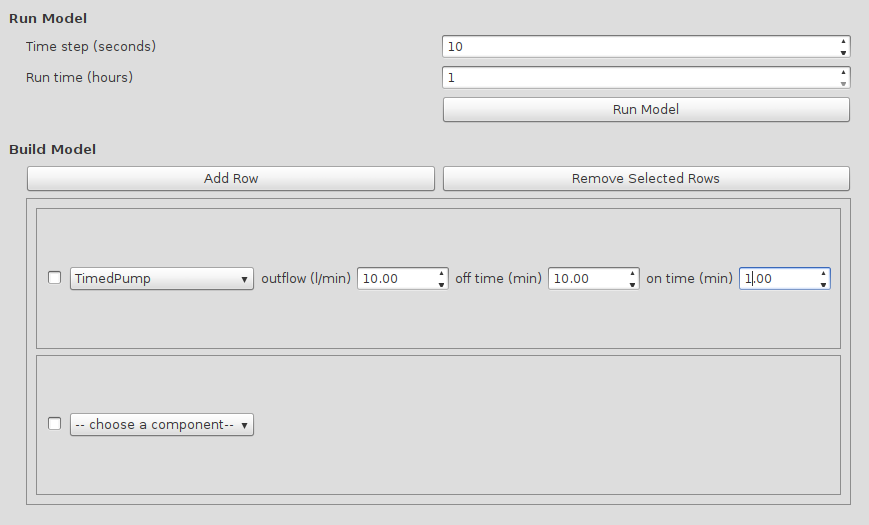
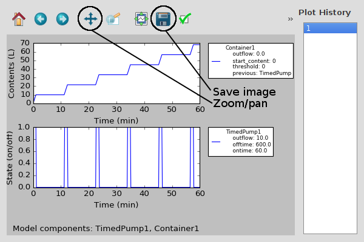

Welcome to Aquaponics Modeler’s documentation!¶
Building the model¶
In the modeler, rows of model components can be combined into a fully working
model. The rows of model components should be specified in the order in which
they are present in the actual setup. So for instance if a pump is pumping
water into a water tank, you need to have the Pump in the
first row and the Container in the second row.
When adding a row, you first need to choose the type of component for that row. After you did, the parameters for that row need to be specified. If all rows have been added and their parameters filled in, you can click the “Run Model” button to get the resulting graphs showing the state of all components over time.
Components¶
The AquaponicsModeler.model module contains all components to be used in
models.
All model components are classes that should inherit from
BaseModelClass. So far there are two groups of component types:
containers and pumps.
Containers are compents that contain water and have water
flowing in or out. They need to have another component before them in the
model, so water can flow from one container to the other.
As Containers always need a source of water, the first
component in the model is a Pump. There are several types of pumps,
but they all assume an infinite water source that they can pump from, and they
pump into a Container.
-
class
AquaponicsModeler.model.Container(previous, outflow, threshold, start_content=0)[source] A container in the aquaponics loop.
Each container is a container/tank/basin/growbed/etc containing a volume of water, with possibly water flowing out into the next component and flowing into it from the previous container in the loop. The inflow speed of each container is determined by the outflow speed of the previous container. The outflow of each container only starts when in the treshold has been reached, and only if the contents of the container > 0 liters.
Parameters:
-
class
AquaponicsModeler.model.FloodDrainContainer(*args, **kwargs)[source] This
Containerwill drain fully when the threshold has been reached.In other respects it works like other
Containersbut for the way it drains. A container with a U-siphon or bell siphon at the end will only start draining when the waterlevel has reached a maximum. When that happens, suction makes sure that all water is drained from the container at the speed specified in outflow.
-
class
AquaponicsModeler.model.Pump(outflow)[source] A general Pump object.
It pumps water into the system (from an unlimited source) and has a constant outflow speed. It doesn’t have contents (unlike containers for instance). The state attribute contains the on (1) or off (0) state of the pump, which is also what is plotted in the resulting graphs.
Parameters: outflow (float) – The speed at which the pump pumps.
-
class
AquaponicsModeler.model.TimedPump(ontime, offtime, outflow)[source] A pump like the Pump object.
This pump has timing parameters which periodically switch it on and off. This way the outflow speed of the pump is controlled. If it is on, it equals the outflow speed parameter, else it is 0.
Parameters:
-
class
AquaponicsModeler.model.Timed555Pump(r1, r2, c, outflow)[source] A pump like the
TimedPumpobject.This pump gets resistor and capacitor values as input parameters instead of the actual ontime and offtime. This object assumes a 555 timer circtui in a-stable mode is used to switch the pump on and off. The resistor values of the timer determine the on and off time.
Parameters:
The Plot Window¶
After pressing the Run Model button, the plot window will show up with the resulting plots. Currently there are only two groups of model components: Containers and Pump. Containers have L as the state variable, which stores the current water content of the container. Pumps have the on/off state of the pump in the state variable with 1=on and 0=off. These are the two variables that are plotted in the plots.
To the right the plot history is shown, where you can see previous model runs including the model parameters. You can also zoom and pan in the graph by clicking the tool and in the plot holding the left mouse button while dragging for panning, and the right mouse button while dragging for zooming. The image of the plots can be saved with the save button.